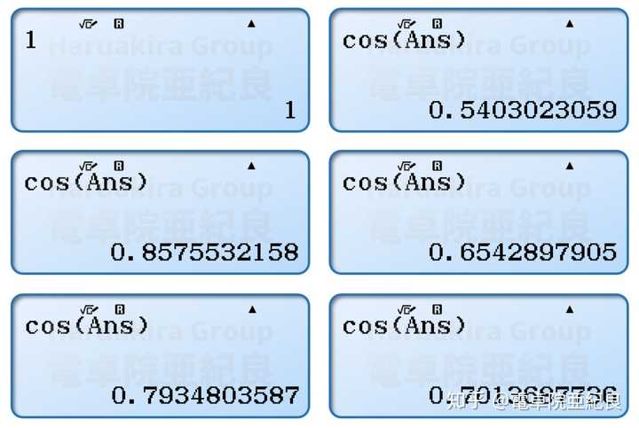
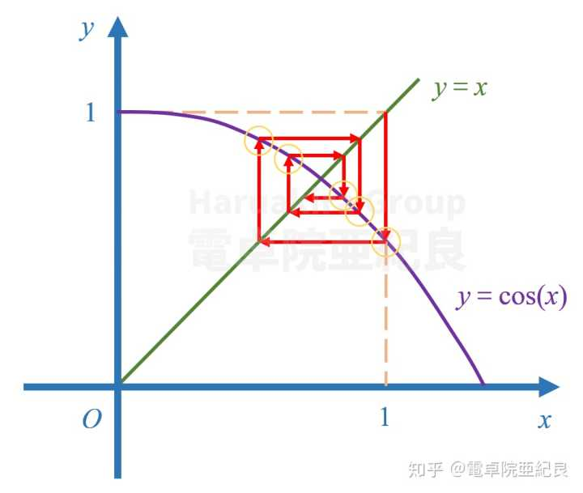
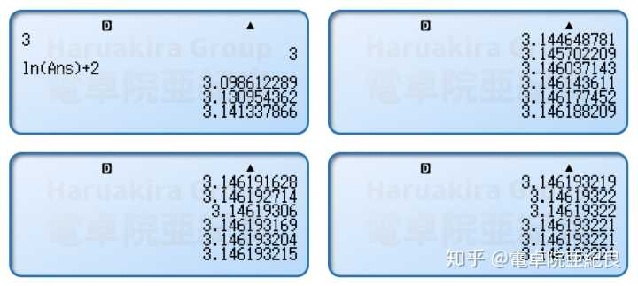

为什么在计算器上计算cos Ans总是趋近于0.739？
作者：電卓院亜紀良 - 知乎
这个过程实际上是数值计算方法中解方程的迭代方法之一——不动点迭代法（也称为简单迭代法）。
单行显示的计算器上输入一个数之后一直按[cos]键，或者双行显示以及其他更高级显示方式的计算器上输入一个数并计算之后，然后输入“cos(Ans)”再一直按[=]键，都是这样的过程。（注意是弧度制，角度单位必须统一，否则这样的迭代过程没有意义。）
在这个过程中，把每一次计算的结果（设为x）作为cos函数的自变量执行cos(x)的计算，这个计算的结果又被当成x，然后再计算cos(x)……如此循环往复，最后其实就是得到了方程x＝cos(x)的数值解。例如fx-991CN X是这样算的：

我们再把这个过程放到函数图象上看，这时就很清晰了：

假设我们从y＝x＝1开始，红色的箭头是迭代过程，黄色的圆圈所圈出的点就是每一步迭代计算的结果。黄色的圆圈逐渐逼近y＝x和y＝cos(x)的交点，不断地重复计算，这个圆圈所圈出来的点的纵坐标就越接近方程x＝cos(x)的解。
有朋友需要继续讲一讲不动点迭代法的收敛性，也有朋友询问这个方法的用途，这里就再补充一下好了。用途当然就是解一些难以手算求解的方程了，不过速度会有些慢。
我们先给出不动点迭代法（简单迭代法）的两个收敛定理（相关证明可以参考一些数值分析的教材）
定理1 大范围收敛定理
设函数 在 上连续，在 上可导，且满足以下两个条件：
（1）当 时， ；
（2）当 时， ，其中 为一常数。
则有如下结论：
（1）方程 在 上有唯一的根 ；
（2）对 ，迭代公式 产生的数列 且收敛于
定理2 局部收敛定理
设 ， 在包含 的某个开区间内连续。如果 ，则存在 ，当 时，由迭代公式 产生的数列 且收敛于 。
定理1指定了一个固定的区间 ，在这个区间里面任取一点 作为初始值，迭代都是收敛的。
定理2没有指出 的值是多少，只是说明了它的存在性。所以在满足定理2的条件时，只要 足够接近 ，迭代公式产生的数列都能收敛于 。
我们回到原来的问题中。迭代公式 ，根据定理1，
“随便在计算器上按个数”的意思就是任取一个 ，那么第一次按下[cos]键或执行“cos(Ans)”计算都能使得 ；
再迭代一次， ，
根据余弦函数的性质，对于 以后的 ，都能满足 。
然后这个时候的 时，都有 ，
即 。
这样定理1的两个条件都满足了，当然也就能确定以下结论：
（1）方程 在 上有唯一的根 ；
（2）对 ，迭代公式 产生的数列 且收敛于
经过计算器实际的计算，我们可以得到 。
我们再举一个例子：求解方程 。
构造函数 ，我们可以发现：
， ，
且当 时， 。
把这个方程写成迭代的形式： ，根据定理1，
由定理1可知在 上必有一个根，且在区间 内任取迭代的初始值，数列 必定会收敛于根 。
例如取 ，然后开始迭代。
我们仍然使用CASIO fx-991CN X计算器，为了更方便地看清迭代的过程，先把计算器设置为线性输入方式，再输入迭代式 ln(Ans)+2，然后一直按[=]，得到下面的结果：

所以方程 的近似根就是 ，计算器给出的这个结果能保证显示的10位有效数字都是足够精确的。